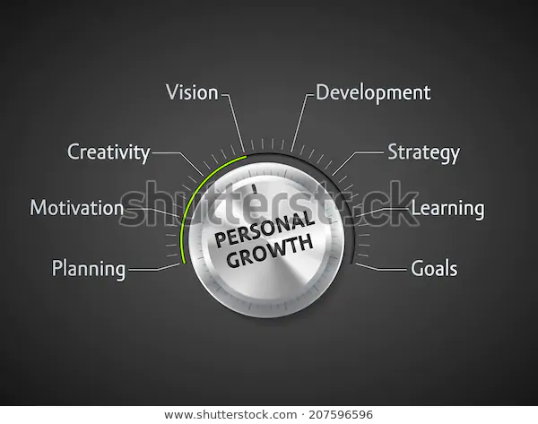

Personal skills relate to how you express yourself. You can quickly tell the level of an individual’s personal skills by observing how they interact with others in the workplace and everyday life. A person with deficient personal skills isn’t easy to deal with, and their presence can cause a rift in a team. Who would you rather work with: An honest individual and upfront or someone who says things behind your back? A person who is consistent and reliable or someone angry and morose one day and friendly cheerful the next? An individual who recognises your contributions to a team or someone who only ever mentions problems and weaknesses?
